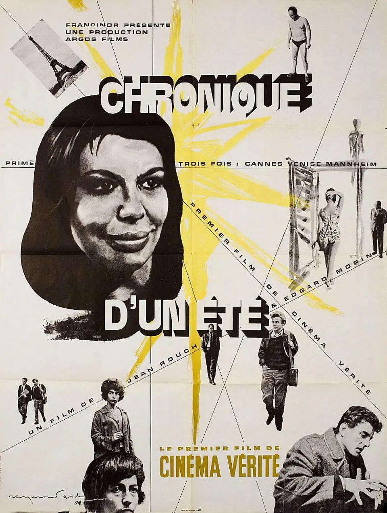

《夏日纪事》(Chronique d'un été/Chronicle of Summer)
剧情简介：
- 1960年的夏天，社会学家埃德加·莫兰和让·鲁什对巴黎年轻人的日常生活进行调查，了解他们对幸福的理解。这部论述电影连续几个月跟踪调查的进行，也记录了主人公们的变化。调查中被采访的人最后在影片第一次放映的时候聚集在一起观看进行讨论，有人的赞同，有的人驳斥。两位导演通过这部真实电影，经历了既极具挑战又充满乐趣的体验。
短评：
- 1.还好没人在这个夏天举着话筒到大街上拦住我问我幸不幸福，从来就没想过幸福是什么，几十年来我唯一在想的就是如何脱离苦难。
- 2.关于一部“cinema verite”拍摄的纪录片——二重奏：莫兰喋喋不休地自我分析，鲁什提问、大笑、聆听或长时间沉默；最后的点题道出矛盾：面对摄影机的表演欲与所谓的真实情感、表演或过分真实；所谓的即时性只会产生偷窥、而表演才引出“真实”？“真实”“电影”，一个不可能的产物。